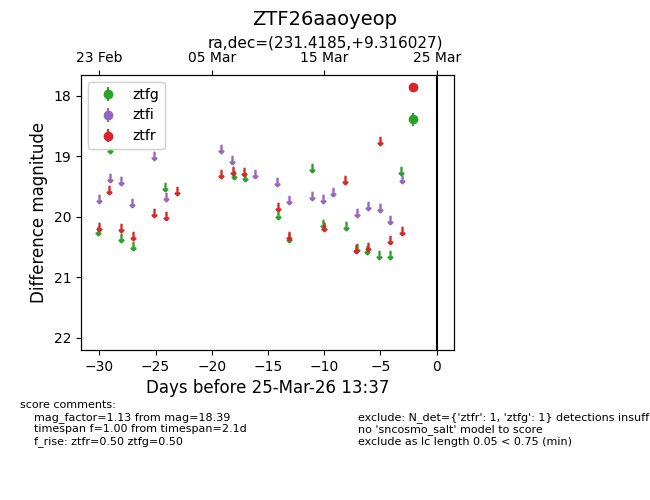
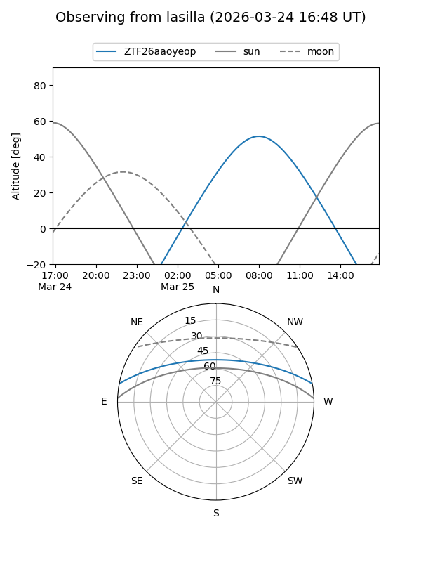
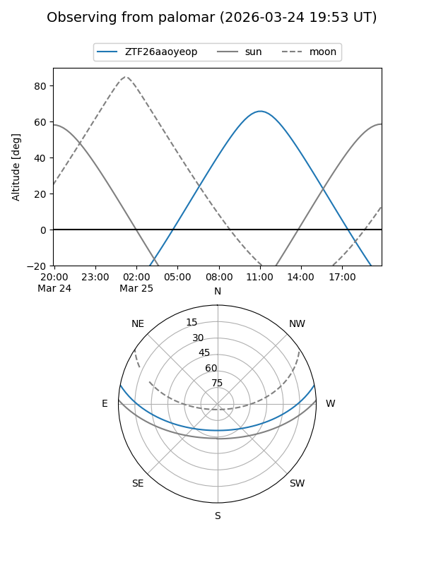

ZTF26aaoyeop
Target ZTF26aaoyeop at 2026-03-25 13:39
Aliases and brokers:
FINK: link
Lasair: link
ALeRCE: link
alt names
ZTF26aaoyeop (ztf,fink_ztf)
Coordinates:
equatorial (ra, dec) = 231.4185,+9.31603
equatorial (HMS+DMS) = 15:25:40.44,+09:18:57.70
galactic (l, b) = (14.2662,+49.51502)
Flags:
Photometry:
last ztfg=18.39, ztfr=17.86
1 ztfg, 1 ztfr detections
Lightcurve

Visibility


Additional plots